Eric Clapton (born March 30, 1945, Ripley, Surrey, England) British rock musician who was a highly influential guitarist in the late 1960s and early ’70s and later became a major singer-songwriter.
Clapton was born to a teenage mother and a Canadian soldier, who was stationed in England during World War II and returned to his wife before Clapton was born.
Clapton was largely raised by his grandparents. He began playing the guitar in his teens and briefly studied at the Kingston College of Art.
After playing lead guitar with two minor bands, in 1963 he joined the Yardbirds, a rhythm-and-blues group in which his blues-influenced playing and commanding technique began to attract attention.
Clapton left the Yardbirds in 1965 when they pursued commercial success with a pop-oriented style.
That same year he joined John Mayall’s Bluesbreakers, and his guitar playing soon became the group’s principal drawing card as it attracted a fanatic following in the London club scene.
In 1966 Clapton left the Bluesbreakers to form a new band with two other virtuoso rock musicians, bassist Jack Bruce and drummer Ginger Baker.
This group, Cream, achieved international popularity with its sophisticated high-volume fusion of rock and blues that featured improvisatory solos.
Clapton’s mastery of blues form and phrasing, his rapid runs, and his plaintive vibrato were widely imitated by other rock guitarists.
The high energy and emotional intensity of his playing on such songs as “Crossroads” and “White Room” set the standard for the rock guitar solo.
Cream disbanded in late 1968, having recorded such albums as Disraeli Gears (1967), Wheels of Fire (1968), and Goodbye (1969).
In 1969 Clapton and Baker formed the group Blind Faith with keyboardist-vocalist Steve Winwood and bassist Rick Grech, but the group broke up after recording only one album.
Clapton emerged as a capable vocalist on his first solo album, which was released in 1970.
He soon assembled a trio of strong session musicians (bassist Carl Radle, drummer Jim Gordon, and keyboardist Bobby Whitlock) into a new band called Derek and the Dominos, with Clapton as lead guitarist, vocalist, and songwriter.
The guitarist Duane Allman joined the group in making the classic double album Layla and Other Assorted Love Songs (1970), which is regarded as Clapton’s masterpiece and a landmark among rock recordings. Disappointed by Layla’s lacklustre sales and addicted to heroin, Clapton went into seclusion for two years.
Overcoming his addiction, he made a successful comeback with the album 461 Ocean Boulevard (1974), which included his hit remake of Bob Marley’s “I Shot the Sheriff.”
On the album Clapton adopted a more relaxed approach that emphasized his songwriting and vocal abilities rather than his guitar playing.
Over the next 20 years Clapton produced a string of albums, including Slowhand (1977), Backless (1978), Money and Cigarettes (1983), August (1986), Unplugged (1992)—which featured the chart hit “Tears in Heaven,” written after the death of his son—and From the Cradle (1994).
At the 1993 Grammy Awards ceremony, “Tears in Heaven” won for both song and record of the year, and Unplugged was named album of the year.
Clapton also explored his musical influences with a pair of Grammy-winning collaborations: Riding with the King (2000) with blues legend B.B. King and The Road to Escondido (2006) with roots guitarist J.J. Cale.
The critical and commercial success of these albums solidified his stature as one of the world’s greatest rock musicians, and subsequent releases, such as Clapton (2010), Old Sock (2013), and I Still Do (2016), finely captured his leisurely late-career form.
In 2018 Clapton released his first holiday album, Happy Xmas.
Clapton, an autobiography, was published in 2007, and the documentary Clapton: Life in 12 Bars appeared in 2017.
Clapton was inducted into the Rock and Roll Hall of Fame as a member of the Yardbirds in 1992, as a member of Cream in 1993, and as a solo artist in 2000.
During the COVID-19 pandemic (declared in 2020), Clapton became known for his criticism of safety regulations and of the vaccine.
He notably collaborated with Van Morrison on the single “Stand and Deliver” (2020), and he refused to play any venue that required vaccinations.
Clapton’s stance proved controversial to some and prompted renewed scrutiny of his earlier behaviour.
In a 1999 interview he admitted to having raped his former wife Pattie Boyd in the 1970s, when he was addicted to drugs and alcohol.
In other interviews and in his memoir, Clapton also faulted his addictions for his racist rant at a 1976 concert in Birmingham, England.
He was documented at the time as having used racial slurs and having told immigrants that England was “a white country” made “for white people.”
Many fans, however, felt that, by blaming drugs and alcohol for his actions, Clapton did not take full responsibility.
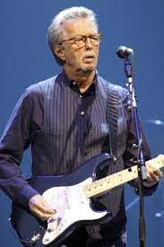
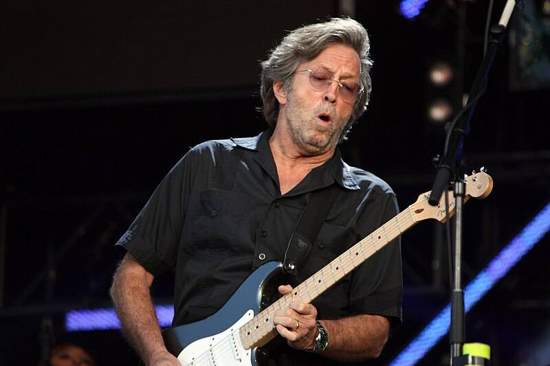
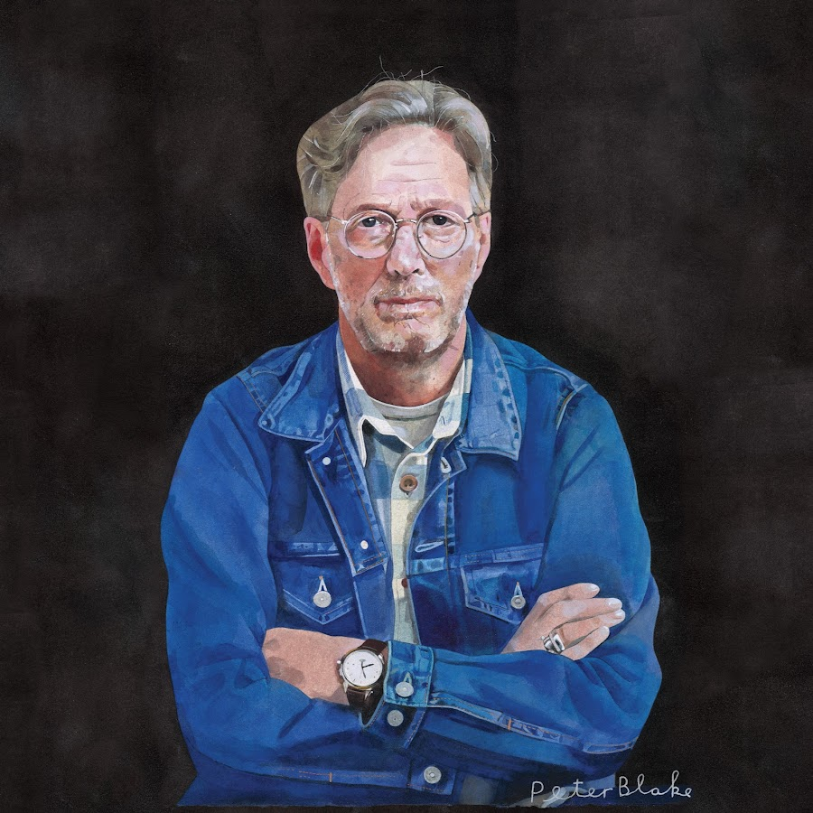
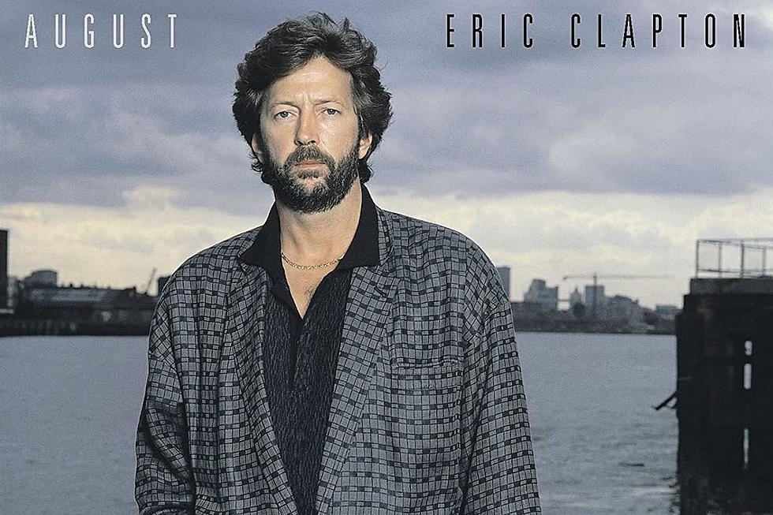
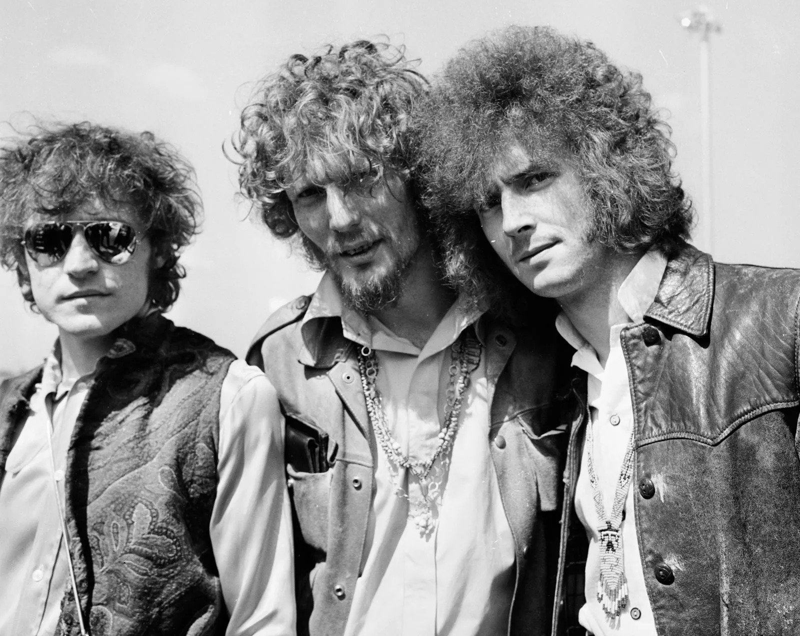
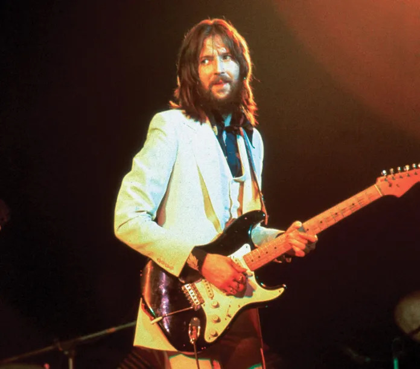
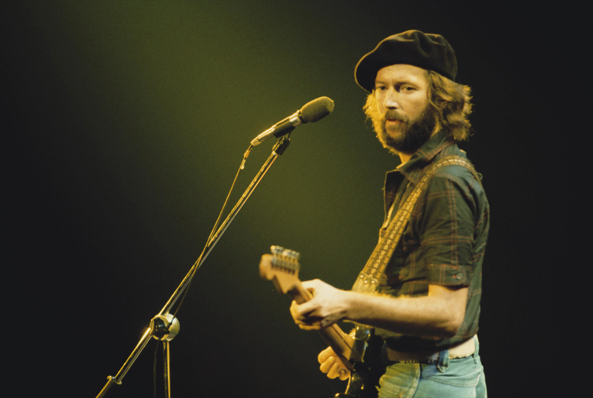
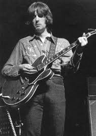
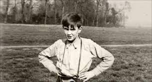
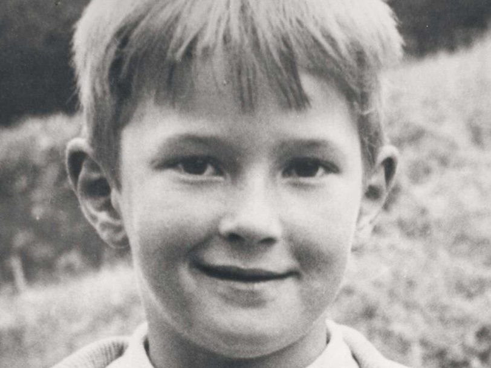
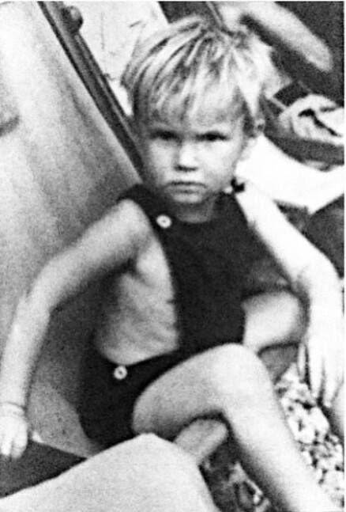
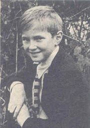
A_
After Midnight (J. J. Cale song)
Angel (J. J. Cale song)
Another Ticket (song)_
B_
Bad Love (Eric Clapton song)
Before You Accuse Me
Believe in Life
Bell Bottom Blues (Derek and the Dominos song)
Black Rose (Eric Clapton song)
Blue Eyes Blue
Blues Power
Born in Time
Bottle of Red Wine_
C_
Call Me the Breeze
Carnival (Eric Clapton song)
Change the World
Circus Left Town
Cocaine (song)
Crosscut Saw (song)_
E_
Easy Now (song)
Every Little Thing (Eric Clapton song)
Eyesight to the Blind_
F_
Farther Up the Road
Forever Man_
G_
Give Me Strength
Got to Get Better in a Little While
Gotta Get Over_
H_
Have You Ever Loved a Woman
Hello Old Friend
Hold On (Eric Clapton song)
Hungry (Eric Clapton song)_
I_
I Ain't Gonna Stand for It
I Can't Hold Out
I Can't Stand It (Eric Clapton song)
(I) Get Lost
I Shot the Sheriff
I've Got a Rock 'n' Roll Heart
It Makes No Difference
It's in the Way That You Use It
It's Probably Me_
K_
Key to the Highway
Kind Hearted Woman Blues
Knock on Wood (Eddie Floyd song)
Knockin' on Heaven's Door_
L_
Lay Down Sally
Layla
Let It Grow (Eric Clapton song)
Let It Rain (Eric Clapton song)
Little Queen of Spades
Little Wing
Love Can Build a Bridge
Love Comes to Everyone_
M_
My Father's Eyes (song)_
N_
No Alibis
No Sympathy
Nobody Knows You When You're Down and Out_
R_
Reconsider Baby
Reptile (Eric Clapton song)
Runaway Train (Elton John and Eric Clapton song)
Running on Faith_
S_
See What Love Can Do
Somebody's Knockin' on My Door
Something's Happening (Eric Clapton song)
Stand and Deliver (Eric Clapton song)
Steppin' Out (instrumental)
Sultans of Swing
Superman inside
Swing Low, Sweet Chariot_
T_
Talk to Me (Babyface song)
Tears in Heaven
Tell the Truth (song)
Travelin' Light (J. J. Cale song)
Tulsa Time_
W_
Wah-Wah (song)
Watch Out for Lucy
While My Guitar Gently Weeps
Who Am I Telling You?
Willie and the Hand Jive
Wonderful Tonight_
Clapton: The Autobiography
Eric Clapton - Unplugged
Eric Clapton - The Cream of Clapton
Eric Clapton: Deluxe
Eric Clapton - Crossroads Vol. 1* (Eric Clapton Vol. 1)
Eric Clapton: Guitar Play-Along Volume 41 (Hal Leonard Guitar Play-Along)
The Essential Eric Clapton: Easy Guitar with Riffs and Solos
Eric Clapton: Guitar Play-Along Volume 24 (Guitar Playalong)
B.B. King and Eric Clapton - Riding with the King (Guitar Recorded Versions)
Eric Clapton: In His Own Words (In Their Own Words)
Eric Clapton - Riff by Riff
Eric Clapton - Me and Mr. Johnson (Guitar Recorded Versions)
Derek and the Dominos - Layla & Other Assorted Love Songs
Eric Clapton - Back Home (Guitar Recorded Versions)
Six-String Stories
Eric Clapton Sheet Music Anthology
Eric Clapton, Classic Songs: Classic Songs Transcribed from the Recordings of Eric Clapton
Eric Clapton - Crossroads Vol. 3*
Eric Clapton - Pilgrim*
Selections from Eric Clapton - Blues
The Classic Songs and Solos of Eric Clapton: Eight Best-Known Songs Recorded by the Legendary Guitarist : Arranged for Guitar Tablature With Chord Names and Full Lyrics
Clapton Eric
Eric Clapton: iSong
Eric Clapton for the Classical Guitar
Tears in Heaven
Eric Clapton-Guitar
Eric Clapton : Deluxe [Songbook]
Eric Clapton-Guitar
Eric Clapton : Deluxe [Songbook]
Eric Clapton: the Guitar Anthology
Eric Clapton - Slowhand
The Classic Songs and Solos of Eric Clapton: Eight Best-Known Songs Recorded by the Legendary Guitarist : Arranged for Guitar Tablature With Chord Names and Full Lyrics
Eric Clapton: Fender Special Edition G-DEC Guitar Play-Along Pack
The Concise Eric Clapton
Eric Clapton - 461 Ocean Boulevard
IMP presents Eric Clapton: [9 songs for piano vocal with guitar boxes]